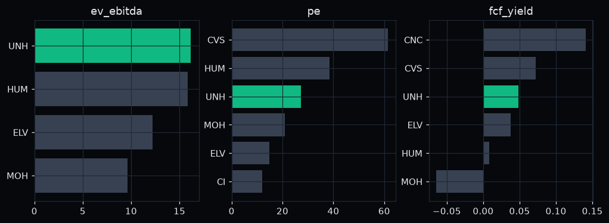
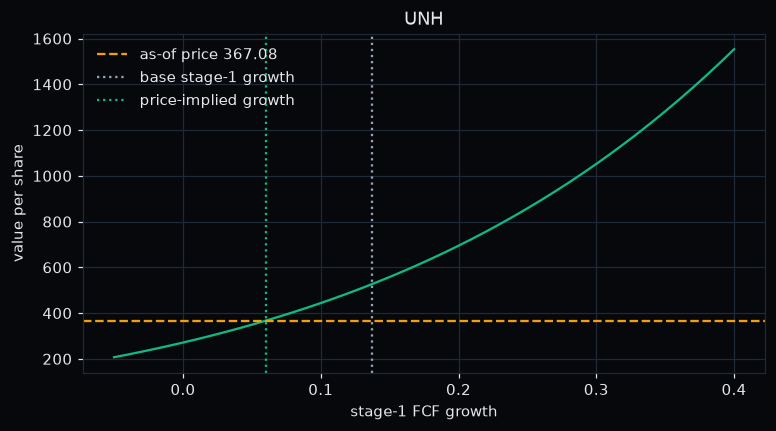
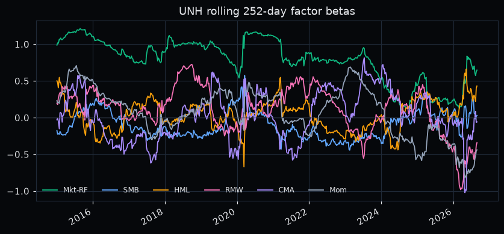
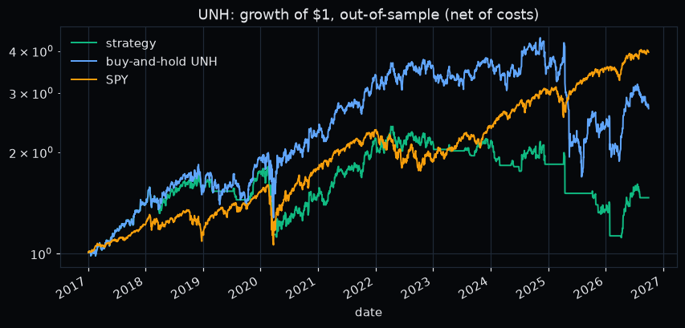
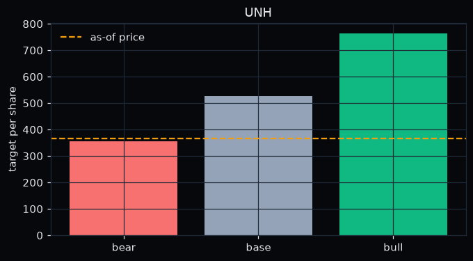

Base-case DCF value $526.64 per share against an as-of price of $367.08: +43.5%.
As of 2026-09-30. The value is an intrinsic-value estimate, not a dated price target. The bear case sits below the price, and the result depends on a low beta (slide 11). Educational project, not investment advice.
| Fiscal year | Revenue | Operating income | Op. margin | FCF | FCF margin |
|---|---|---|---|---|---|
| FY2021 | $287.6B | $24.0B | 8.3% | $19.9B | 6.9% |
| FY2022 | $324.2B | $28.4B | 8.8% | $23.4B | 7.2% |
| FY2023 | $371.6B | $32.4B | 8.7% | $25.7B | 6.9% |
| FY2024 | $400.3B | $32.3B | 8.1% | $20.7B | 5.2% |
| FY2025 | $447.6B | $19.0B | 4.2% | $16.1B | 3.6% |
SEC EDGAR 10-K figures as first reported. FCF = operating cash flow − capex. Revenue keeps rising while operating income and FCF shrink. That gap is the key driver to watch.
| EV/EBITDA | P/E | FCF yield | Gaps | |
|---|---|---|---|---|
| UNH | 16.2x | 27.3x | 4.9% | |
| ELV | 12.2x | 14.9x | 3.8% | |
| CI | n/a | 12.1x | n/a | capex not reported in XBRL; total debt not reported in XBRL |
| HUM | 15.9x | 38.6x | 0.8% | |
| CNC | n/a | n/a | 14.1% | net loss: P/E not meaningful; negative EBITDA: EV/EBITDA not meaningful |
| MOH | 9.6x | 20.9x | -6.4% | |
| CVS | n/a | 61.5x | 7.2% | total debt not reported in XBRL |
| Peer median | 12.2x | 20.9x | 3.8% |

UNH trades above the peer median on P/E and EV/EBITDA but offers a higher FCF yield. Comps alone don't make the case. Gaps are left blank, never estimated.
| risk free | 5.3% | FRED DGS10 on 2026-09-30 |
| beta | 0.41 | 5y daily stock vs SPY returns to as-of (OLS slope) |
| equity risk premium | 8.3% | Ken French Mkt-RF, arithmetic mean 1926-07 to 202608, x12 |
| cost of equity | 8.7% | CAPM: rf + beta x ERP |
| pre tax cost of debt | 5.5% | FY2025 interest expense / average total debt (SEC 10-K) |
| tax rate | 12.9% | FY2025 income tax / pretax income (SEC 10-K) |
| equity weight | 82.0% | market cap (as-of price x Yahoo shares) / (market cap + book debt) |
| wacc | 8.0% | we x ke + (1 - we) x kd x (1 - t) |

Base FCF $16.1B (FY2025 operating cash flow - capex (SEC 10-K)). Stage-1 growth 13.7% fades to 3.0% terminal growth over 10 years. Value $526.64. The price implies 6.0% growth.
| Factor | Beta | t-stat |
|---|---|---|
| Mkt-RF | +0.82 | 13.3 |
| SMB | -0.12 | -2.0 |
| HML | +0.13 | 1.8 |
| RMW | +0.26 | 4.3 |
| CMA | +0.09 | 0.8 |
| Mom | +0.08 | 1.7 |
| Alpha (annual) | 5.9% | 0.8 |

FF5 plus momentum, daily, 2014-01-03 to 2026-08-31. R² 0.23: most of UNH's risk is stock-specific. After the market, the profitability (RMW) tilt has the strongest t-stat. Alpha is not significant.
| Ann. vol | Beta vs SPY | Max drawdown | 1-day 95% VaR | 1-day 95% ES | |
|---|---|---|---|---|---|
| Full sample: UNH | 28.6% | 0.78 | -61.4% | 2.3% | 4.0% |
| Full sample: SPY | 17.1% | 1.00 | -33.7% | 1.6% | 2.6% |
| Trailing 3y: UNH | 36.8% | 0.25 | -61.4% | 2.8% | 5.8% |
| Trailing 3y: SPY | 15.3% | 1.00 | -18.8% | 1.4% | 2.1% |
UNH is more volatile than SPY and has suffered a -61.4% drawdown. Its low recent beta (0.25 trailing 3y) reflects stock-specific moves, not safety.
| CAGR | Sharpe (rf = 0) | Max DD | |
|---|---|---|---|
| Trend signal | 4.0% | 0.29 | -53.3% |
| Buy-and-hold UNH | 10.8% | 0.49 | -61.4% |
| SPY | 15.2% | 0.87 | -33.7% |

Out-of-sample 2017-01-03 to 2026-09-30, walk-forward window choice, next-day execution, 10 bp per switch. Both the signal and buy-and-hold UNH trail SPY on Sharpe. This is a valuation call, not a momentum trade.
| Stage-1 growth | WACC | Value | vs price | |
|---|---|---|---|---|
| Bear | 7.6% | 8.5% | $354.47 | -3.4% |
| Base | 13.7% | 8.0% | $526.64 | +43.5% |
| Bull | 19.4% | 7.5% | $764.68 | +108.3% |

The bear case is -3.4%, below today's price. Growth is set at the lower quartile, median and upper quartile of UNH's own rolling 5-year FCF growth, and WACC moves by ±0.5%. No probability weights are applied, because there is no data-based way to set them. All three cases still use the 5y beta that sets WACC at 8.0%. With the full-sample beta, the base case alone falls to -12.5% (slide 11).
No dated catalysts are listed: this project uses only the frozen data and does not forecast events.
I would drop the long if the next 10-K shows FCF still falling, or if a re-estimated beta pushes WACC to the point where the base value falls below the price.
02 to 06 produce every figure. results/summary.json holds every number. A test checks
each number on these slides against that file.make all rebuilds everything offline and runs the tests.| Price | DCF value | vs price | Bear | Bull | Price-implied growth | |
|---|---|---|---|---|---|---|
| COST | $910.34 | $410.96 | -54.9% | $284.63 | $496.94 | 38.5% |
V (first pick, archived). Dropped after M3: the base DCF was well below the price, even the bull case showed a loss, and the price implied far more FCF growth than V's history. See results/archive/V_summary.json.
COST (third on the shortlist). Every scenario, including bull at $496.94, is below the price. The price implies 38.5% stage-1 growth.
All three were run with identical code and assumptions. Nothing was tuned to make a long case appear.
| terminal growth | Assumption: roughly long-run nominal US GDP growth; kept below the 10y yield |
| fade years | Assumption: growth fades linearly from stage-1 to terminal over 10 years |
| scenario wacc shift | Assumption: +/-0.5pp WACC in bear/bull |
| trading cost bps | Assumption: 10 bp per one-way switch (commission plus spread for a mega-cap) |
| sma grid | Assumption: candidate trend-filter windows (trading days) |
| train years | Assumption: walk-forward training window |
| cash return | Assumption: cash earns 0 in the backtest (conservative for the strategy) |
| beta window years | Convention: 5y of daily returns for the CAPM beta |